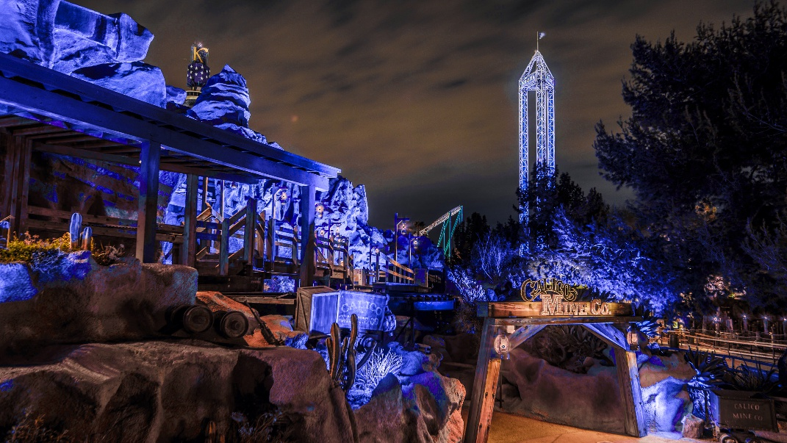
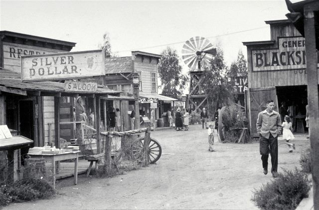

Calico
Did you know Walter Knott actually grew up in Calico? He grew up repairing the buildings and ended up buying Calico, He then sold it to San Bernadino National Park, Thus bringing some GhostTown to Buena Park!

BlackSmith
Knotts Berry Farm was an actual berry farm that introduced Boysenberry, Mr. knott built up a resturant so his wife could make and sell her amazing Chicken dinner while people waited

Log Ride
Log ride was the first ride at knotts, When there was so many people waiting, Mr. Knott wanted to give them something to look forward to! John Wayne was the first person on the log ride ever!